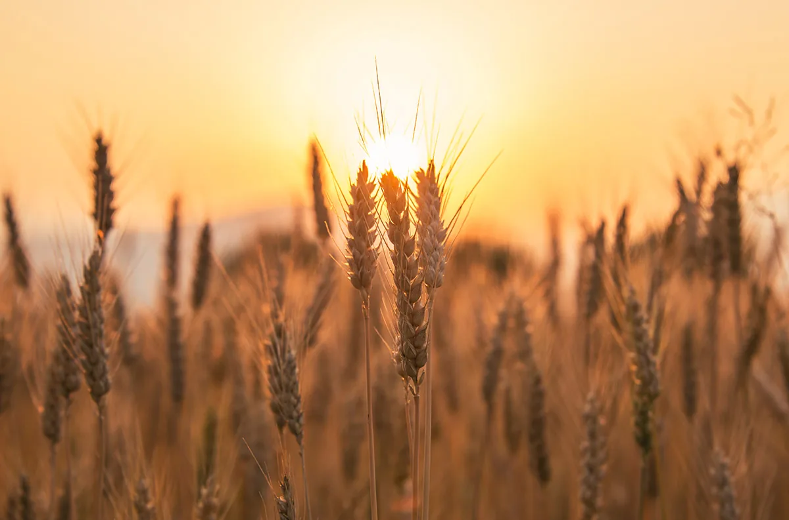
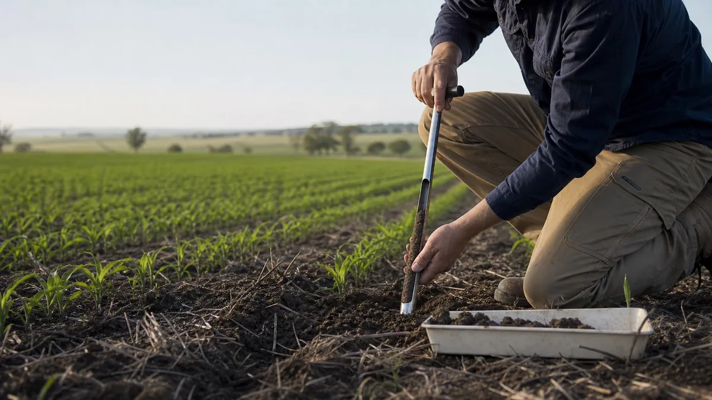
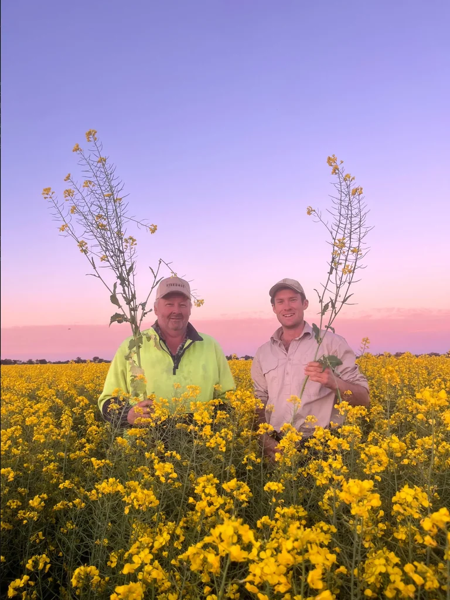

Broadacre & Pasture
We use soil and plant test results to develop a prescription blend for your paddock and the crop you plan to grow.

From a soil test to a prescription blend
Two parts of the same paddock can grow quite differently. Knowing where each sample came from, what grew there last and what went on helps us interpret the results.
We talk through what the next crop needs, what you can apply with your equipment and what fits your budget. That’s the starting point for your Hybrid-Ag prescription blend.
Explore testing and interpretationBroadacre field notes

Recording with James WhiteDry Season Broadacre NutritionJames talks through dry sowing and choosing a wheat variety after a late autumn break.
Also with James WhiteDry Season Pasture ManagementTalk to a Broadacre agronomist
Tell us what you’re growing and what you’d like to work through. If you already have test results, bring those along.